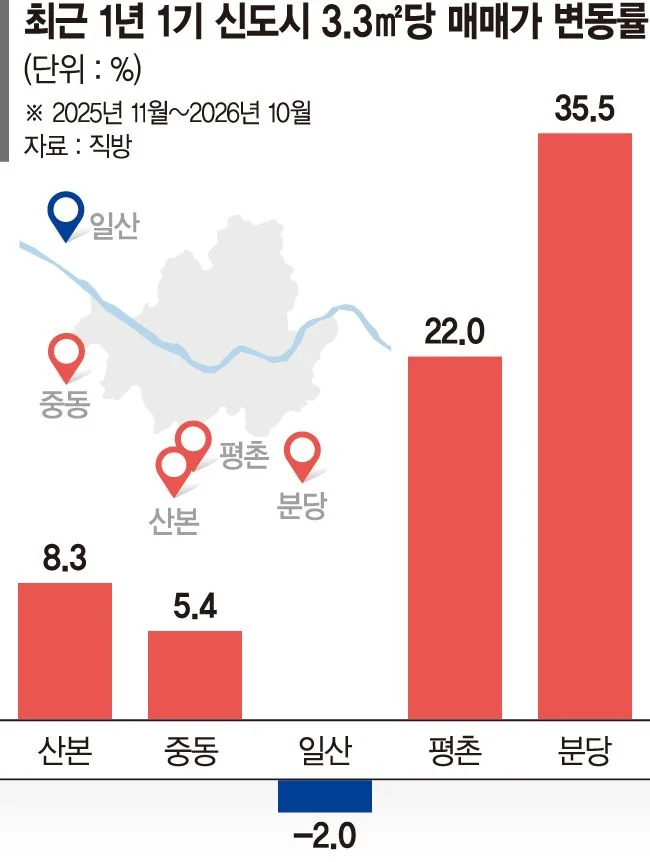

https://n.news.naver.com/article/comment/014/0005601630

https://n.news.naver.com/article/comment/014/0005601630
https://naver.me/FRLSadbv
호수세권 썩파트로 가자
매매가 2억2천에서 4억7천500 착한 아파트 가즈아
저기 재건축 나 중딩때부터 이야기 나온거같은데.. 크흠
이목동 살면 사당까지 20분 컷인데
출근시간에 버스를 못탐
나도 러프하게 대충 말한게 40분인데 난 성대역주변이라 30분이면감 근데 출퇴근시간때 눈치좀 보긴해야함 ㅋㅋ
핸드폰 액정 붙일때 기포 뺴는거 생각해라
서울 조지고
1기 신도시 조지고
위성도시 조지고
수도권 조지고
천안 대전 청주 조지고 ....
이런식으로 전반적으로 집값 안정화될떄까지 눌러 내리면 됨 ㅋㅋ
근데 1기 신도시가 위치도 그렇고 계획 단계부터 워낙 잘 설계해서 지금도 가보면 쾌적함. 병원, 쇼핑, 공원 같은 생활 인프라나 지하철, 광역버스 같은 교통망도 잘 깔려있고. 구축 많다는게 단점이긴 한데 노특법으로 1기 신도시 구축들 다 재건축 추진중이라 서울 못들어가면 대체할만함. 그동안 노후화로 집값 눌려있다 이제 상승세 탔으니 매수 고려하는 사람이면 임장 부지런히 다녀보길. 아 물론 같은 1기라도 분당은 다른 레밸임
뭐 살만한곳은 너무 올랐네 서울만 살아남네 징징거리던 작년에 산본에 5억주고 들어갔으면 지금 8억 ㅋㅋㅋㅋㅋ
일산은 왜?ㅠㅠ
부동산 얼마나 조져났으면 시발 ㅋㅋㅋㅋ
누가 투표했는지 자~알 뽑아놨다 시발련들
일산 진짜 존나 썩었더라
서울이랑은 가깝긴한데 썩다리맞긴함 아파트도 다 ㅈㄴ 오래되고
씁
동신이 어딘지모르겠지만 대충 율전동인거지 ?